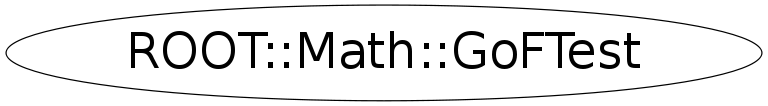

Function Members (Methods)
public:
| virtual | ~GoFTest() |
| Double_t | AndersonDarling2SamplesTest(const Char_t* option = "p") const |
| void | AndersonDarling2SamplesTest(Double_t& pvalue, Double_t& testStat) const |
| Double_t | AndersonDarlingTest(const Char_t* option = "p") const |
| void | AndersonDarlingTest(Double_t& pvalue, Double_t& testStat) const |
| ROOT::Math::GoFTest | GoFTest(UInt_t sampleSize, const Double_t* sample, ROOT::Math::GoFTest::EDistribution dist = kUndefined) |
| ROOT::Math::GoFTest | GoFTest(UInt_t sample1Size, const Double_t* sample1, UInt_t sample2Size, const Double_t* sample2) |
| ROOT::Math::GoFTest | GoFTest(UInt_t sampleSize, const Double_t* sample, const ROOT::Math::IGenFunction& dist, ROOT::Math::GoFTest::EUserDistribution userDist = kPDF, Double_t xmin = 1, Double_t xmax = 0) |
| Double_t | KolmogorovSmirnov2SamplesTest(const Char_t* option = "p") const |
| void | KolmogorovSmirnov2SamplesTest(Double_t& pvalue, Double_t& testStat) const |
| Double_t | KolmogorovSmirnovTest(const Char_t* option = "p") const |
| void | KolmogorovSmirnovTest(Double_t& pvalue, Double_t& testStat) const |
| Double_t | operator()(ROOT::Math::GoFTest::ETestType test = kAD, const Char_t* option = "p") const |
| void | operator()(ROOT::Math::GoFTest::ETestType test, Double_t& pvalue, Double_t& testStat) const |
| void | SetDistribution(ROOT::Math::GoFTest::EDistribution dist) |
| void | SetUserCDF(const ROOT::Math::IGenFunction& cdf, Double_t xmin = 1, Double_t xmax = 0) |
| void | SetUserDistribution(const ROOT::Math::IGenFunction& dist, ROOT::Math::GoFTest::EUserDistribution userDist = kPDF, Double_t xmin = 1, Double_t xmax = 0) |
| void | SetUserPDF(const ROOT::Math::IGenFunction& pdf, Double_t xmin = 1, Double_t xmax = 0) |
private:
| Double_t | ExponentialCDF(Double_t x) const |
| Double_t | GaussianCDF(Double_t x) const |
| Double_t | GetSigmaN(UInt_t N) const |
| ROOT::Math::GoFTest | GoFTest() |
| ROOT::Math::GoFTest | GoFTest(ROOT::Math::GoFTest& gof) |
| void | Instantiate(const Double_t* sample, UInt_t sampleSize) |
| Double_t | InterpolatePValues(Double_t dA2, Int_t bin) const |
| Double_t | LogNormalCDF(Double_t x) const |
| void | LogSample() |
| ROOT::Math::GoFTest | operator=(ROOT::Math::GoFTest& gof) |
| Double_t | PValueAD1Sample(Double_t A2) const |
| Double_t | PValueAD2Samples(Double_t& A2, UInt_t N) const |
| void | SetCDF() |
| void | SetDistributionFunction(const ROOT::Math::IGenFunction& cdf, Bool_t isPDF, Double_t xmin, Double_t xmax) |
| void | SetParameters() |
| void | SetSamples(vector<const Double_t*> samples, const vector<UInt_t> samplesSizes) |
Data Members
Class Charts
{kind=link}
{kind=link}
{kind=link}
{kind=link}

Function documentation
GoFTest(UInt_t sample1Size, const Double_t* sample1, UInt_t sample2Size, const Double_t* sample2)
Constructor for using only with 2-samples tests
GoFTest(UInt_t sampleSize, const Double_t* sample, ROOT::Math::GoFTest::EDistribution dist = kUndefined)
Constructor for using only with 1-sample tests with a specified distribution
GoFTest(UInt_t sampleSize, const Double_t* sample, const ROOT::Math::IGenFunction& dist, ROOT::Math::GoFTest::EUserDistribution userDist = kPDF, Double_t xmin = 1, Double_t xmax = 0)
Templated constructor for using only with 1-sample tests with a user specified distribution
Instantiate(const Double_t* sample, UInt_t sampleSize)
GoFTest(UInt_t sampleSize, const Double_t* sample, const ROOT::Math::IGenFunction& dist, ROOT::Math::GoFTest::EUserDistribution userDist = kPDF, Double_t xmin = 1, Double_t xmax = 0)
Specialization using IGenFunction interface
SetUserDistribution(const ROOT::Math::IGenFunction& dist, ROOT::Math::GoFTest::EUserDistribution userDist = kPDF, Double_t xmin = 1, Double_t xmax = 0)
SetDistributionFunction(const ROOT::Math::IGenFunction& cdf, Bool_t isPDF, Double_t xmin, Double_t xmax)
void SetUserPDF(const ROOT::Math::IGenFunction& pdf, Double_t xmin = 1, Double_t xmax = 0)
Sets the user input distribution as a probability density function for 1-sample tests
void SetUserCDF(const ROOT::Math::IGenFunction& cdf, Double_t xmin = 1, Double_t xmax = 0)
Sets the user input distribution as a cumulative distribution function for 1-sample tests
The CDF must return zero
void SetDistribution(ROOT::Math::GoFTest::EDistribution dist)
Sets the distribution for the predefined distribution types
virtual ~GoFTest()
Double_t AndersonDarling2SamplesTest(const Char_t* option = "p") const
The Anderson-Darling K-Sample Test algorithm is described and taken from http://www.itl.nist.gov/div898/software/dataplot/refman1/auxillar/andeksam.htm and described and taken from (1) Scholz F.W., Stephens M.A. (1987), K-sample Anderson-Darling Tests, Journal of the American Statistical Association, 82, 918–924. (2-samples variant implemented) */ void AndersonDarling2SamplesTest(Double_t& pvalue, Double_t& testStat) const;
Double_t AndersonDarlingTest(const Char_t* option = "p") const
The Anderson-Darling 1-Sample Test algorithm for a specific distribution is described at http://www.itl.nist.gov/div898/software/dataplot/refman1/auxillar/andedarl.htm and described and taken from (2) Marsaglia J.C.W., Marsaglia G. (2004), Evaluating the Anderson-Darling Distribution, Journal of Statistical Software, Volume 09, Issue i02. and described and taken from (3) Lewis P.A.W. (1961), The Annals of Mathematical Statistics, Distribution of the Anderson-Darling Statistic, Volume 32, Number 4, 1118-1124. */ void AndersonDarlingTest(Double_t& pvalue, Double_t& testStat) const;
Double_t KolmogorovSmirnov2SamplesTest(const Char_t* option = "p") const
The Kolmogorov-Smirnov 2-Samples Test algorithm is described at http://www.itl.nist.gov/div898/software/dataplot/refman1/auxillar/ks2samp.htm and described and taken from http://root.cern.ch/root/html/TMath.html#TMath:KolmogorovTest */ void KolmogorovSmirnov2SamplesTest(Double_t& pvalue, Double_t& testStat) const;
Double_t KolmogorovSmirnovTest(const Char_t* option = "p") const
The Kolmogorov-Smirnov 1-Sample Test algorithm for a specific distribution is described at http://www.itl.nist.gov/div898/software/dataplot/refman1/auxillar/kstest.htm and described and taken from (4) Press W. H., Teukolsky S.A., Vetterling W.T., Flannery B.P. (2007), Numerical Recipes - The Art of Scientific Computing (Third Edition), Cambridge Univerdity Press */ void KolmogorovSmirnovTest(Double_t& pvalue, Double_t& testStat) const;
void operator()(ROOT::Math::GoFTest::ETestType test, Double_t& pvalue, Double_t& testStat) const
The class's unary functions
GoFTest()
void SetCDF()
Double_t LogNormalCDF(Double_t x) const
Double_t GaussianCDF(Double_t x) const
Double_t ExponentialCDF(Double_t x) const
Double_t InterpolatePValues(Double_t dA2, Int_t bin) const
Double_t PValueAD2Samples(Double_t& A2, UInt_t N) const
Double_t PValueAD1Sample(Double_t A2) const
void LogSample()
void SetSamples(vector<const Double_t*> samples, const vector<UInt_t> samplesSizes)
void SetParameters()